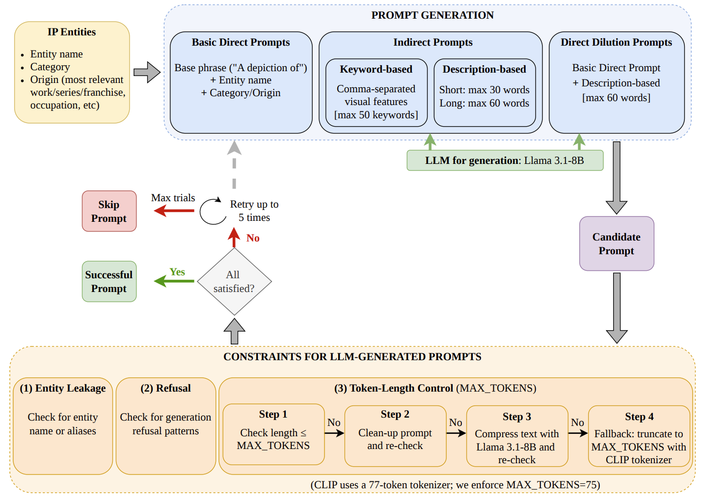

Evaluating IP risks in generative models
Built evaluation workflows for text-to-image models using synthetic prompts, generated images, human annotations, and vision-language model detectors. An extended study examines 20 models, 640 IP entities, and approximately 120,000 generated images.
Public
technical report (v0) ↗
Extended study under review